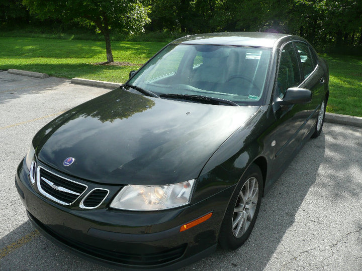
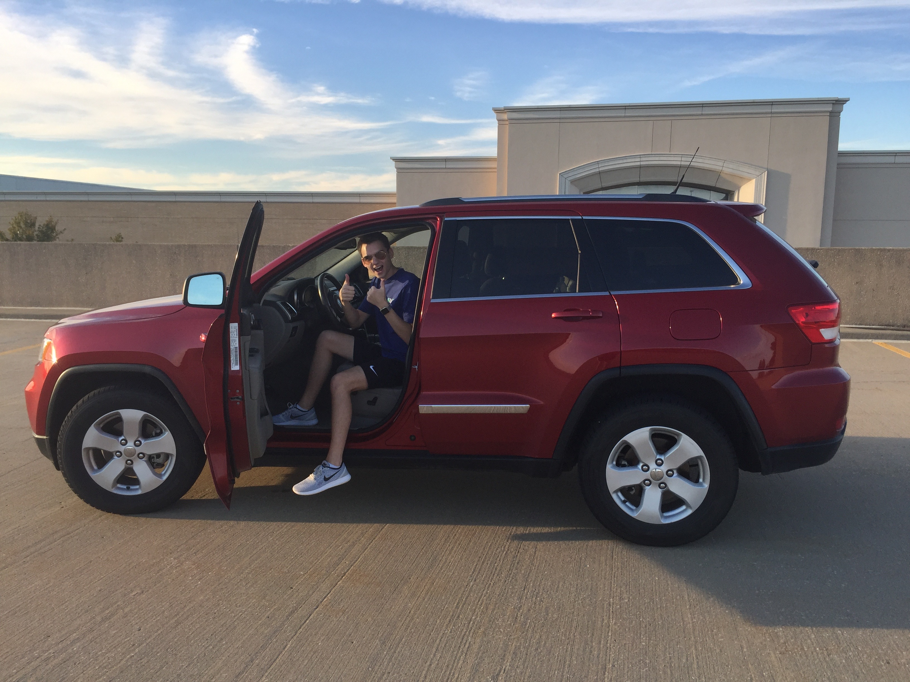

2004 Saab 9-3
The first car that I purchased with my own money was a 2004 Saab 9-3. I bought this car in 2010 after graduating high school. I drove the Saab all throughout college, and for the first few years of my post-college life. Here are some of the best features:
- 4 cylinder turbo engine
- Combined fuel economy of 28 MPG
- Luxury finishes, such as leather seats
Click here to learn more about the Saab 9-3

2011 Jeep Grand Cherokee
In 2016, I decided it was time to buy a new car. This time, I chose to go for an SUV. I found this 2011 Jeep Grand Cherokee and instantly knew I had to have it! This is my current car and it is still going strong. So far, these are my favorite things about the Jeep:
- 4 wheel drive
- Leather heated seats
- Towing and off-road capabilites
Click here to learn more about the Jeep Grand Cherokee

Mercedes-Benz G-Class
The Mercedes-Benz G-Class (also known as the G-Wagon) is my ideal next car. However, with a base price of $124,500, it may be a while before I can afford one. It is nice to dream though!
I also find it fascinating that the G-Class was originally designed as a military vehicle, and now it has become a status of luxury. These days, you will see many celebrities and wealthy people driving these.
Click here to learn more about the Mercedes G-Class